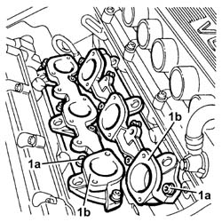

1072B12 intake manifold (one) lh or rh - r r and replace gasket
- Path
- Procedures > 10 ENGINE > 1072 INLET AND EXHAUST MANIFOLDS > 1072B inlet manifolds > 1072B12 intake manifold (one) lh or rh - r r and replace gasket
- Kind
- repair procedure (removal / refitting; the operation number is the code)
- Applies to
- engines: 3.2 V6; all production periods
- Interactive page
- https://sloeber94.github.io/elrnDB-a147/en/#/3024978
Applies to: engines: 3.2 V6; all production periods
 Removing
Removing
 Refitting
RefittingEnsure that the ignition key is in the OFF position, then disconnect the negative battery terminal (-).
 | Name | Connector |
|---|---|---|
- | Battery |
Proceed with removal 1072B42 left hand or right hand inlet manifold (one) - r+r .
Proceed with removal 1056B62 l/h and r/h fuel pipe assembly - with injectors - r + r .
1. Undo the bolts (1a) and remove the relevant inlet manifold (1b).
Remove the gasket.

Applies to: engines: 3.2 V6; all production periods
Refitting
RemovingPlace the intake manifold complete with gasket back in its housing and secure it tightening the bolts to the recommended torque.
 | Fastening | Component | Ø | Value (daNm) |
|---|---|---|---|---|
- | Bolt | INLET MANIFOLD | M8 | (Cylinder head side) 1.9 ÷ 2.3 |
Proceed with refitting 1056B62 l/h and r/h fuel pipe assembly - with injectors - r + r .
Proceed with refitting 1072B42 left hand or right hand inlet manifold (one) - r+r .
Connect the negative (-) battery terminal.
Topics linked from this page (3)
- 1056B62 l/h and r/h fuel pipe assembly - with injectors - r + r
- 1072B42 left hand or right hand inlet manifold (one) - r+r
- A1B Battery ( Connectors )